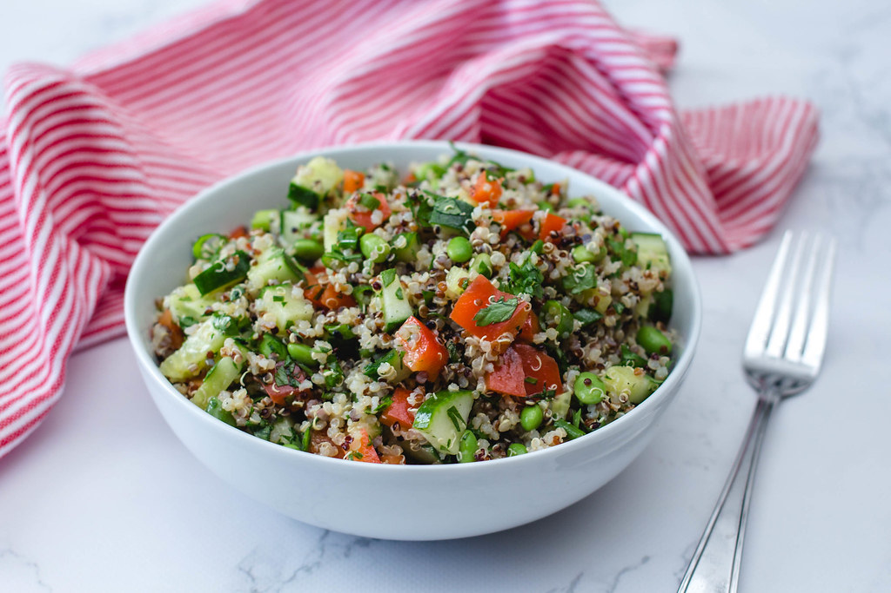
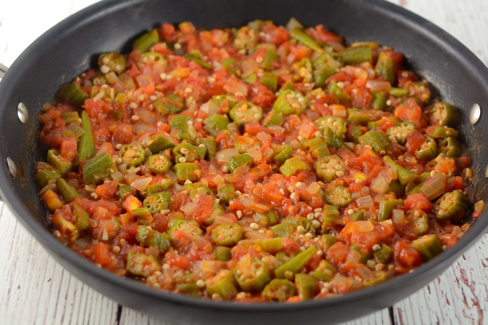
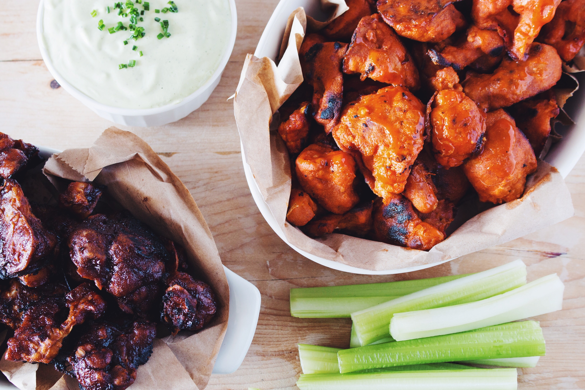

Welcome to tutorials! Here you can find videos and articles on how to get started with cooking.
| Basic Knife Skills - Tasty |
How to Master Basic Knife Skills - Chef Billy Parisi |
| How to Chop Every Vegetable - Epicurious |
How to Sharpen Dull Knives - Tasty |
|  | Quinoa Salad by Food Network Recipe Ingredients
|
|  | Okra With Tomatoes by Food Network Recipe Ingredients
|
|  | Buffalo Cauliflower with Blue Cheese Sauce by Food Network Recipe Ingredients
Cheese Sauce Buffalo Cauliflower |
Epicurious. (2020). How to Chop Every Vegetable. YouTube. YouTube. Retrieved October 8, 2021, from https://www.youtube.com/watch?v=p28wMbunulQ.
Food Network. (2013, December 13). Quinoa salad. Food Network. Retrieved October 10, 2021, from https://www.foodnetwork.com/recipes/quinoa-salad-recipe0-1946649.
Food Network. (2014, December 30). Okra with Tomatoes. Food Network. Retrieved October 10, 2021, from https://www.foodnetwork.com/recipes/food-network-kitchen/okra-with-tomatoes-recipe-2103770.
Food Network. (2015, November 4). Buffalo cauliflower with blue cheese sauce. Food Network. Retrieved October 10, 2021, from https://www.foodnetwork.com/recipes/food-network-kitchen/buffalo-cauliflower-with-blue-cheese-sauce-3362800.
Parisi, C. B. (2019). How to Master Basic Knife Skills. YouTube. YouTube. Retrieved October 8, 2021, from https://www.youtube.com/watch?v=VJNA4vrdWec.
Rosenstrach , J., & Ward, A. (2013, August 26). Shrimp Fried Rice. Bon Appétit. Retrieved October 8, 2021, from https://www.bonappetit.com/recipe/shrimp-fried-rice.
TasteofHome. (2021, September 29). Garlic Bread Recipe: How To Make It. Taste of Home. Retrieved October 8, 2021, from https://www.tasteofhome.com/recipes/garlic-bread/.
TasteofHome. (2021, October 2). The ultimate grilled cheese. Taste of Home. Retrieved October 8, 2021, from https://www.tasteofhome.com/recipes/the-ultimate-grilled-cheese/.
Tasty. (2017). Basic Knife Skills. YouTube. YouTube. Retrieved October 8, 2021, from https://www.youtube.com/watch?v=G-Fg7l7G1zw.
Tasty. (2017). How To Sharpen Dull Knives. YouTube. YouTube. Retrieved October 8, 2021, from https://www.youtube.com/watch?v=Wk3scs5FqCY.